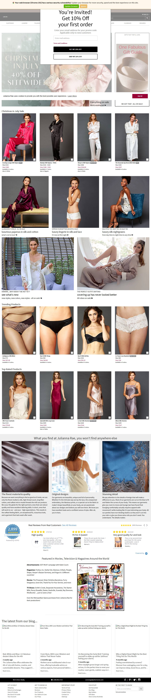

Seda de luxo com dominio desde 2004. So 16 anuncios ativos e o criativo dominante e desconto: '40% OFF SITEWIDE'. Ensina o que acontece com estetica sem mecanismo: vira guerra de preco.
Medido na Meta Ad Library em 22/07/2026 (contagem global por pagina via page_ids + estimated_total_count).
Momentum da operação: estavel/retraindo levemente: so 16 ativos, criativo dominante e desconto. Marca antiga defendendo margem, nao escalando.
Amostra de 16 anúncios (ordenada por recência) na Ad Library. Ritmo, duplicação e o que está sobrevivendo há mais tempo.
| Anúncios por dia | 0,6 |
| Criativos únicos por semana | 1,0 |
| Fator de duplicação | 4x |
Base: inferido dos 16 ativos: catalogo de imagem de marca + desconto.
producao media: foto de marca. O criativo dominante e desconto, nao mecanismo.
Ordenados por longevidade (dias no ar) e duplicação. O criativo mais antigo ainda ativo é o vencedor mais provável.
| Criativo campeão (headline real) | No ar | Por que funciona · link |
|---|---|---|
| "40% OFF SITEWIDE" | 3d | O criativo dominante e DESCONTO permanente. Sinal de categoria madura com margem sob pressao ver anúncio ↗ |
| "Loved by 25,000 Women" | 19d | Prova social. 25 mil clientes e plausivel pra dominio de 2004 (nao e fraude de idade) ver anúncio ↗ |
| "Feel the Luxury, Wear the Quality" | 6d | Estetica/qualidade de seda. Compra adiavel: escala mal sem desconto ver anúncio ↗ |
Tráfego medido (SimilarWeb). Benchmark e faturamento aplicados do IRP Commerce Fashion, Clothing & Accessories (jun/2026).
Não descrever, decodificar. O que faz o campeão desta loja ganhar, para o mentorado copiar.
| Big idea / ângulo | Seda de luxo acessivel: qualidade de marca antiga vendida no gatilho de preco. |
| Mecanismo único | Seda + heranca de marca (2004). Sem mecanismo fisico: o driver virou desconto. |
| Formato de hook | Desconto agressivo ('40% OFF SITEWIDE') e prova social ('25,000 women'). |
| Estrutura do presell | Marca antiga sustentando venda por desconto permanente. Sem advertorial. |
| Objeção principal | Preco de seda quebrado com desconto, nao com mecanismo. Sinal de mecanismo fraco (estetica). |
Modele esta home e esta PDP: veja a estrutura real do concorrente e o que copiar.
Modele esta home: juliannarae.com ↗ — copie a sequência de blocos, a prova social e a oferta acima da dobra.

Marca de 2004 sustentando venda por desconto permanente = categoria madura com margem sob pressao. Serve de alerta: estetica/seda sem mecanismo vira guerra de preco.
MARCA. dominio de 2004 (21 anos), seda de luxo, prova social consistente com a idade. Marca real, nao dropship. Nao replicavel.
CONSTRUÍVEL. 45% nao-pago, 21 anos de marca. Fosso de tempo, mas margem sob pressao (desconto permanente) = fosso enfraquecendo.